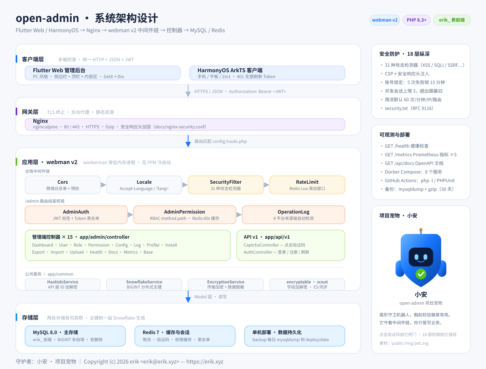
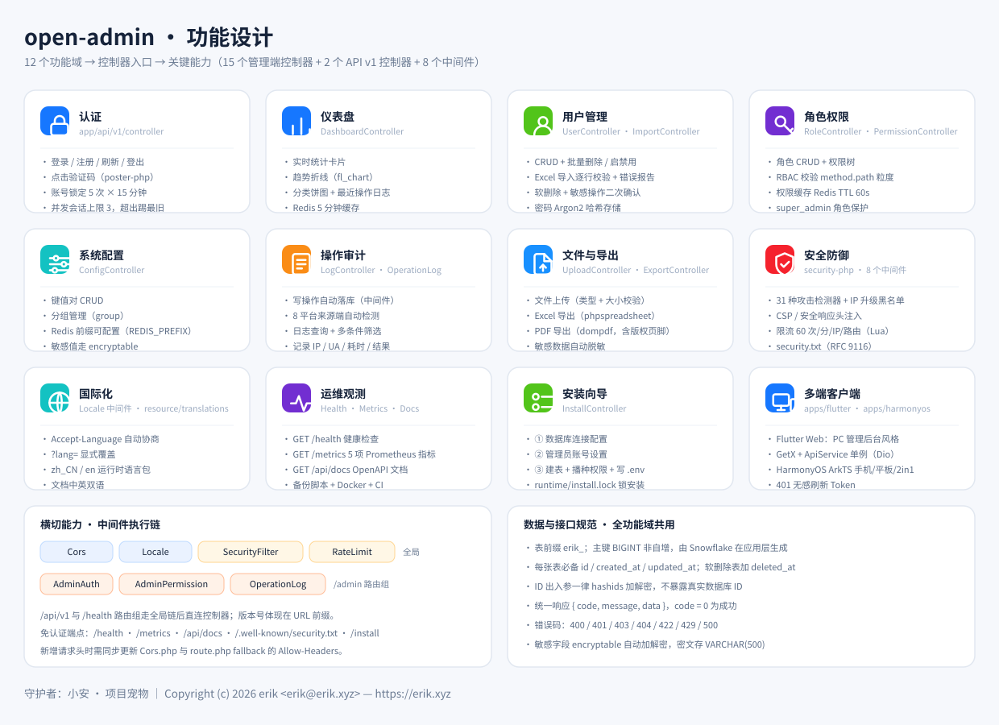
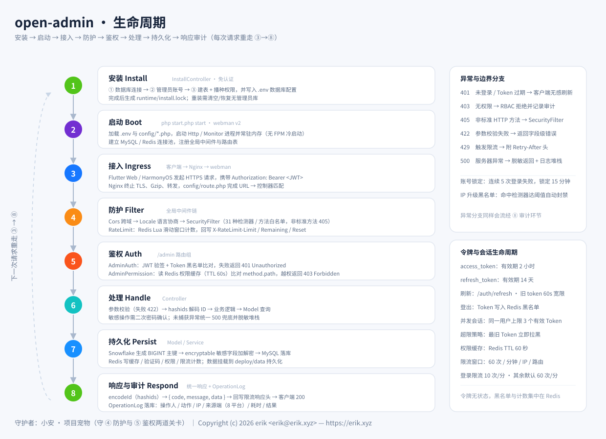

认证
登录与令牌
点击验证码、JWT 签发与校验、Token 黑名单，access_token 2 小时，refresh_token 14 天。
连续 5 次失败锁定 15 分钟，同一用户最多 3 个有效 Token。
后端基于 webman v2 常驻内存进程，管理端使用 Flutter Web 的 PC 布局，移动端提供 HarmonyOS 原生客户端。数据、权限、审计与导出都在同一条链路上。
从认证、用户、权限到日志与导出，核心能力已经在同一套后台里打通。
认证
点击验证码、JWT 签发与校验、Token 黑名单，access_token 2 小时，refresh_token 14 天。
连续 5 次失败锁定 15 分钟，同一用户最多 3 个有效 Token。
仪表盘
统计卡片、趋势折线、分类饼图与最近操作，Redis 缓存 5 分钟。
用户
CRUD、批量删除与启禁用、软删除、Excel 导入逐行校验。
权限
RBAC 按 method.path 校验，权限缓存 60 秒，super_admin 受保护。
配置
键值对 CRUD、分组管理，敏感值通过 encryptable 加解密。
审计
写操作由中间件自动落库，记录操作人、动作、IP、UA、耗时与结果。
自动识别 8 种平台来源端，支持多条件筛选。
文件
上传校验、Excel 导出、PDF 导出，敏感数据自动脱敏。
客户端
Flutter Web 使用 PC 管理后台布局，HarmonyOS 覆盖手机、平板与 2in1。
安全防御
31 种攻击检测器覆盖 XSS、SQL 注入、SSRF、路径遍历与反序列化等场景，命中阈值后升级为 IP 黑名单。
运维观测
健康检查、5 项 Prometheus 指标、OpenAPI 文档、Docker Compose 与数据库备份脚本。
API 文档国际化
Accept-Language 自动协商，?lang= 显式覆盖，运行时提供 zh_CN 与 en，文档覆盖 12 种语言。
安装向导
填写数据库连接、创建管理员、建表并播种权限，自动写入 .env 后生成安装锁。

它不是装饰。小安站在「防护」与「鉴权」两道关卡上，替每一次请求守门。
笑
点选表情切换形态，点击大图可放大。
12 种彩色动态形态，全部支持 prefers-reduced-motion 降级。
客户端经 Nginx 进入 webman，全局链先做防护与限流，/admin 路由组再完成认证、授权与审计。点击图片可放大查看。



需要 PHP 8.3+、Composer 2.x 与 MySQL 8.0+。Elasticsearch 7.x 可选，搜索功能需要时再启用。
拉取 Composer 依赖，确认 PHP 扩展与数据库连接可用。
复制环境变量模板，生产环境务必替换 JWT、Hashids 与加密密钥。
webman 默认监听 8787 端口，启动后保持常驻进程运行。
访问 /install 填写数据库与管理员信息，自动建表、播种权限并写入 .env。
安装完成后会生成 runtime/install.lock。需要重装时删除该文件即可。
composer install
cp .env.example .env
php start.php start
# 浏览器打开
# http://localhost:8787/installcp .env.docker .env
docker compose up -d
# webman: http://localhost:8787
# Nginx: http://localhost:8080管理端与 API 使用同一套 JWT，响应格式与错误码保持统一，客户端只需要处理一种契约。
管理员登录
访问服务根路径，使用安装向导创建的管理员账号登录。Flutter 管理端与 HarmonyOS 客户端共用 API。
API 认证
Authorization: Bearer <token>access_token 有效期 2 小时，refresh_token 14 天。401 时调用刷新接口，不在客户端保存明文密钥。
统一响应
{ "code": 0, "message": "success", "data": {} }错误码覆盖 400、401、403、404、422、429 与 500。ID 出入参使用 Hashids，不暴露数据库主键。
限流
默认 60 次/分钟/IP/路由，登录接口 10 次/分钟。响应携带 X-RateLimit-Limit、Remaining、Reset，超限时读取 Retry-After。
| 方法 | 路径 | 用途 |
|---|---|---|
POST | /api/v1/auth/login | 登录并签发令牌 |
POST | /api/v1/auth/refresh | 刷新 access_token |
GET | /health | 健康检查 |
GET | /metrics | Prometheus 指标 |
GET | /api/docs | OpenAPI 交互文档 |
按 Git tag 与提交记录整理。每次迭代都围绕后台的可用性、安全性与多端体验。
v2.1.2
项目宠物、站点首页与系统架构、功能、生命周期三张手写 SVG 图集加入仓库。
API
API 版本从请求头迁移到 /api/v1 前缀，路由与文档保持同一种语义。
文档
README、CLAUDE 与架构文档补齐多语言译本，CI 自动发布。
新增响应式静态官网，代码切换到 MIT 开源授权，视觉资产继续单独授权。
新增小安、站点首页与三张手写 SVG 设计图，全部文档对齐代码。
CaptchaTest 按真实包契约断言，.env.example 补回 JWT_ALGORITHM。
集中处理后台运行与依赖问题，保持管理端和 API 行为一致。
完善 README、中间件架构、Flutter 页面路径与权限种子步骤。
支持 iPadOS、macOS、Windows 与 Linux 端，管理后台开始跨平台。
认证、用户、角色权限、配置、日志与安全防护进入可用状态。
如果这个项目对你有帮助，可以扫码打赏。二维码支持点击放大。